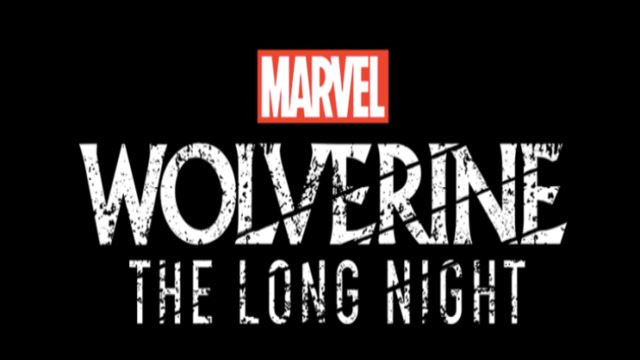

My Music
My Music
You'll Soon Be Able To LISTEN To "Wolverine: The Long Night"
Marvel has teamed up with podcast platform Stitcher Premium to create a new scripted podcast series titled Wolverine: The Long Night. Kicking off early 2018, the series will star Richard Armitage (Hannibal) as Logan. It will eventually be available on all podcast platforms. The story will revolve around two agents, Sally Pierce (Celia Keenan-Bolger) and Tad Marshall (Ato Essandoh), who are assigned to investigate several murders in Burns, Alaska. There, they join the local deputy, Bobby Reid (Andrew Keenan-Bolger) to find the main suspect. And who is the main suspect? None other than Logan, of course. Talking about the story, writer Ben Percy hinted that, "There are all these broken pieces that are being fitted together, and a shifting set of suspects, and every episode, you learn more and at the same time, recognise that you've been mistaken all along. It functions like a turnstile of mysteries." Wolverine's fractured mind plays right into the building mystery of the story. "Because he's been mind-wiped again and again, he doesn 't know the whole terrible truth about his life. Part of the series is him recovering those memories and despite his attempts to separate himself from society, getting drawn into a situation where frontier justice is called to."